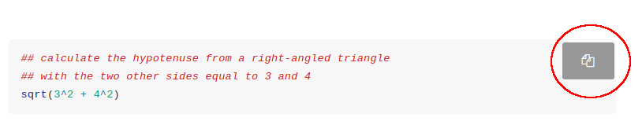

Structure of this workshop
In these notes, R commands to be entered into the console are shown in grey boxes e.g.
and the corresponding outputs look like:
## [1] 0.0 0.1 0.2 0.3 0.4 0.5 0.6 0.7 0.8 0.9 1.0If you’re reading this online, there is a downloadable PDF version of these notes if you prefer, available via the link next to the title at the top of the page:
Also, if you are reading the HTML notes, then you can easily copy code into R by hovering over the code chunk and clicking the copy button:

Tasks
Task
All tasks will be denoted in panel boxes like this one. In the HTML version, all solutions can be toggled by hitting the Show Solution buttons. In the PDF version solutions are given in the Appendix and are linked via the Show Solution buttons.
Lecture Notes
Note
The lecture notes for all parts of this workshop can be downloaded here.